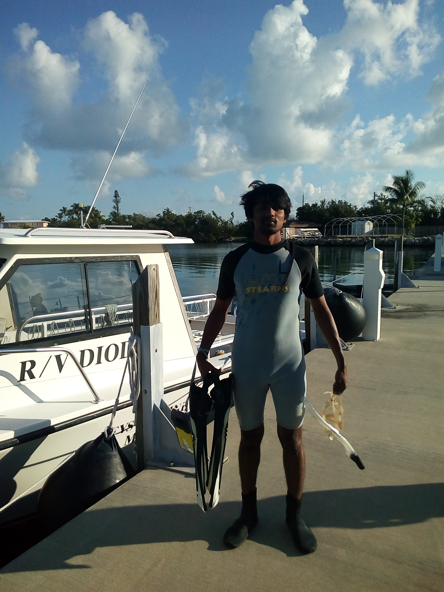
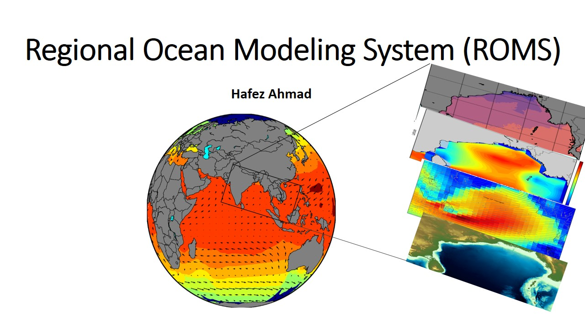
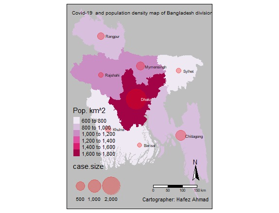
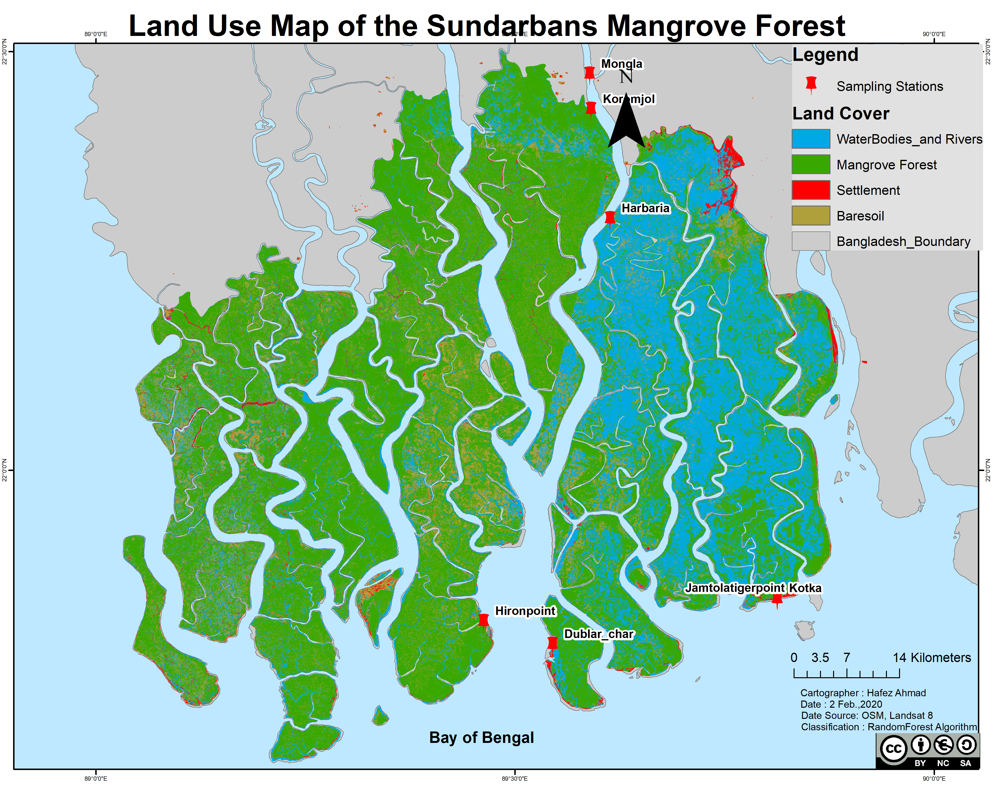

Personal Website for Writing, Training,and Teaching
Experienced in Project Management,Oceanography,Observational Oceanography,Marine Ecology, Geoinformatics and Remote Sensing,
Strategic Planning, Data Analysis and Management, and skilled in Python, R, MATLAB, Julia,Google Earth Engine, ArcGIS, Adobe Illustrator, Microsoft Office.
I am passionate about physical Oceanographic and Marine Ecology Research and coastal Development Research. I will be happy to be part of your Research Groups.
I have a Bachelor’s Degree in Oceanography from the Faculty of marine science and fisheries,
University of Chittagong ,Bangladesh and I am also an Exchange student at Florida Gulf Coast University, Florida, USA .
More information about my Research and Activities can be found at Education section
Detection and tracking of mesoscale eddies in the Bay of Bengal using Satellite altimetry data *
Applications of Machine learning in Computational Oceanographic Research *
Land use assessment and forecasting in the teknaf Upazila, Bangladesh.
Marine Spatial Planning to support Integrated Coastal zone Management in Bangladesh *
Spatio –temporal variability of SST and Primary productivity in the Bay of Bengal.
A case study for the Biodiversity Assessment and land cover in the Sundarbans mangrove forest.
Collaborative Research: The tropicalization of Western Atlantic seagrass beds (Dr. James Douglass jdouglass@fgcu.edu (Principal Investigator)).[Volunteered in lab and data collection]
Status and Future Trends of the Bangladesh Coastal Zone Management and coastal risks.
Present status of impacts of climate change and adaptations in Bangladesh coastal areas.
Integrated Management of Coastal Resources of Saint Martin’s Island in Bangladesh.
My Activities at a glance
Oceanographic Researcher
Physical Oceanography,Bio-optics Oceanography (Ocean productivity, Biological effects on Ocean's optical properties),Coastal zone management ,climate change ,
Climate hazards and Oceanographic data collection distribution of temperature and salinity, Coastal and Deep-ocean processes :up-welling, water mass formation and movement, ocean currents, interior and surface mixing, energy inputs and dissipation,
surface and internal waves, and surface and internal tides.
Marine Biodiversity , Ecosystem and Modeling
Nature conservation and Ocean Literacy
Nature Conservation is important for many reasons, not least of all to the health of the planet. However, the study of the subject goes merely beyond health and ecosystems.
I like to work with Nature and Nature based solutions projects. I did some conservation stuffs and Research in the coastal area of Bangladesh and
I love to teach Ocean Literacy and you can visit Our official website bgfbd .
Programming and Mapping
Many oceanographers grow up loving the sea and its creatures. but when It comes in Data analysis and Modeling , you have to gain programming knowledge. fortran is widely used langauge in ocean Model. then
During the last couple of decades, Matlab has been the most commonly-used scripting language in physical oceanography, and it has a large user base in many other fields.
Recently, however, Python has been gaining ground, often being adopted by former Matlab users as well as by newcomers. I have excellent working skill of Python ,Julia , R , Matlab, FORTRAN. ArcGIS , QGIS,SAGA,GRASS . you can find more in github repo
Traveling
I love traveling. Traveling makes you more open and accepting .
If you travel, you will not only learn about foreign cultures,
but about your own as well. You will notice the cultural differences,
and will find out what makes your culture unique. After retrurning from a long journey,
you will see your country with new eyes. I have visitied United States of America, Washington DC,
FLORIDA,New YORK ,Dubai,Greek athens, Saint Martin island , Cox'S bazar,sunburbans Mangrove.
About Me
Hafez Ahmad
I am a young Oceanographer. I am using Python and R, MATLAB ,and C++ for data analysis, modeling, and visualization. I like to work with Machine learning and Ocean/ climate modeling.
I have strong working skills in MS Office, Tableau, ArcGIS.I am currently working on Machine learning and Deep learning applications inEarth Science and Environmental Science.
Completed Offline and online Training/ Courses
Training on “Regression and Hotspot analysis, 2018 ” at University of Dhaka, Bangladesh
Some of the themes addressed are in this practical Training :
Basic concepts of Regression and Hotspot analysis
Geospatial Data generation using ArcGIS 10. 5
Practical ways to identification of Crime- hotspot and uses geospatial Regression
"First Aid” in American corner, Chittagong, Bangladesh
Some of the themes addressed are in this practical Training :
Basic concepts of First Aid
Practical uses of the some first aid valid methods and instruments
SDGs for Youth: My Goal, My Responsibility” by Sudoksho and EMK Center, U.S. Embassy, Dhaka , Bangladesh
participation in “Social Leadership Hackathon”
"Climate Change in practice and becoming global citizens for a sustainable society” by the Asian pacific center of education for international understanding and Ban ki-moon center.
Geospatial and Environmental Analysis by University of California, Davis
Julia Scientific Programming [with honors ] by the University of Cape Town
Introduction to GIS: Manipulating and Mapping Geospatial Data in R
Learned Advanced python Concepts
R programming hands-on specialization for data science
Become an expert with ESRI's GIS software ArcGIS desktop
“Machine Learning Bootcamp™: Hand-On Python in Data Science
Ecology: Ecosystem Dynamics and Conservation
Large Marine Ecosystems: Assessment and Management
Data Analysis with Python
R Programming
Summer program on Climate Change: Challenges and Issues for the Earth Sciences “Institut Pierre-Simon Laplace Climate Graduate School", France
Some of the themes addressed are in this program :
The Climate System: a few decades that changed many things
New Trends in Climate Modeling: anticipating the future
Impacts and feedbacks of marine biogeochemistry and diversity
Exploring Earth observing systems and Models
The solar system: the sister planets of the Earth
Recent news from past climate
Preparing to Manage Human Resources
Marine Spatial Planning: balancing social, economic, cultural, and ecological objectives
Developing-your-emotional-intelligence
Excel 2016 Essential Training
Project-management-foundations and Cert Prep: Project Management Professional (PMP)
Python,Julia and R, MATLAB ,and C++ for data analysis and modeling, Geographic information system, remote sensing and visualization. additionally I like to write about the environment.
If you appoint in your work, I will do it very efficiently. I am diligent in my approach to ensuring that the work I do is completed to the highest standard.
I like to work closely with my clients to ensure that they receive the best possible service making your ideas a reality through an easy and efficient process
resulting in repeat business and a lasting relationship with the focus of understanding your business vision.
Hello World! My services include but not limited to the following:-
Desktop and Web Mapping and GIS such
mapping of the study area
Density mapping
Contour map
Bathymetric mapping
Road mapping
flood mapping,
volumetric mapping
Landslide Analysis
Digital Elevation Mapping
Landcover and landuse Map
Predictive Map
choropleth map
Different index based map
Tracking Map
Hotspot Mapping
Sptial Regressional Mapping
Multidimentional data based Map
Geo Data analysis , visualization and Modeling using ArcGIS, QGIS, GRASS, SAGA.
Spatial Programming and in GIS using Python and R.
Sourcing and downloading Satellite Images, Satellite image classification including supervised and unsupervised.
GIS data file conversion — Convert from Shapefile to KML, GML, CSV, GeoJSON, etc.
Geo-spatial data collection and mining.
GIS data API — Google Maps API, NASA API, etc.
dashboard with python (dash)and R (shiny)
Animation based Plotting in any format
dashboard w and digital story Map with ArcGIS
Geocoding, Tracking analysis and distribution Modeling
Making Google Earth Engine App
data extraction from Google Earth Engine
Machine learning with Google Earth Engine App
Analyzing Acoustic data
Text data analysis and visualization
Whatsapp Text data analysis and visualization
Online content Writing and Development on environmental and Marine science
Education in the United States of America and Bangladesh
I was a student of Florida Gulf Coast University(FGCU), Florida, USA, . I worked with Dr. Felix Jose ,Dr. James Douglass and Dr. Tosi. they are doing great research activities.
My Research activities and publications:
1: Ahmad, Hafez. 2019. “A Field Assessment on Karnafully Estuarine Ecology.” International Journal of Fisheries and Aquatic Studies 7 (1): 35–38. Here
2: Ahmad, H. (2019a) ‘Applications of Remote Sensing in Oceanographic Research, International Journal of Oceanography & Aquaculture, 3(1), pp. 1–9. doi: 10.23880/ijoac-16000159. Here
3: Ahmad, H. (2019). Machine learning applications in oceanography. Aquatic Research, 2(3), 161-169. https://doi.org/10.3153/AR19014 Here
4: Hafez Ahmad, Shakila islam jhara. (2019). Present status of impacts of climate change and adaptations in Bangladesh coastal areas. In Social Change A journal for social development (Vol. 9, pp. 71–81). Young Power in Social Action. Here
5: Ahmad, H. (2019b) ‘Bangladesh Coastal Zone Management Status and Future Trends’, Journal of Coastal Zone Management, 22(1), pp. 1–7. doi: 10.4172/2473-3350.1000466. Here
Poster : 1: Spatio –temporal variability of SST and primary productivity in the Bay of Bengal by Hafez ahmad and Dr. Felix Jose at Florida gulf coast university (FGCU) ,Florida ,U.S.A Here
2: Are invertebrate in tape grass beds as diverse and productive as those in seagrass beds ?
By Kelly chase , Hafez ahmad and Dr. James Douglass at FGCU Here
Field working in the Keys Marine Laboratory ,Florida , USA

The Keys Marine Laboratory (KML) is a full-service marine field station situated in the heart of the Florida Keys.
I I have spent three here and done a lot of field works and Research under the supervision of Dr. Douglass.
We dived into the Gulf of Mexico and the Atlantic Ocean and Identified Seagrass,Marine fishes and Coral reefs.
Working in the Marine Ecology Lab
This is Dr. Douglass's Ecological lab. I spent about 86 hours in the last fall 2019 semester.
I worked on Benthic Samples and sorting with four graduate students of the Florida Gulf Coast University.
The Social leadership Hackathon is a half-day workshop where students from diverse backgrounds can come together to
learn and exercise leadership to solve a problem in their community.
Participants will work in small groups to focus on a particular local problem and work together as a team to create an action plan to solve it.
I love Oceand and its Weather. I dived into the Ocean.
Snorkeling in the Gulf of Mexico
This was part of our Marine Ecology course. we collected fish and seagrass samples from different spots
of the Gulf of Mexico. then We identified all of them at the Laboratory.
Ocean models are numerical models with a focus on the properties of oceans and their circulation. Ocean models play a large role
in aiding our understanding of the ocean's influence on weather and
climate.I love to work in the Ocean Modeling . I have little experience in Regional Ocean Modeling system
by scientists to better understand the earth climate system.

Why do we need to Model Ocean?
Ocean models play a large role in aiding our understanding of the ocean’s influence on weather and climate.
They are a repository for mechanistic theories of how the ocean works with numerical methods used to transform the mathematical expression of the theories into
a computational tool for scientific investigations. In particular numerical models are for hypothesis-driven experimental and theoretical studies that
make them an essential tool in the hierarchy of methods used
by scientists to better understand the earth climate system.
Ecosystem modeling is the mathematical representation of ecological systems from individuals to the whole biome
which is studied to understand the real nature, the models can be analytic or simulations based.
It has applications in a wide variety of disciplines.
Cross sectional Plot: A section plot is a vertical "slice" through the ocean, along an alignment that is often a straight line,
portraying the vertical structure of a selected property along the alignment.
this type of plot is extremely useful in the case of multidimensional data analysis. I made it using Python programming for the presentation purpose.
Significant wave height of the Ocean
author: Hafez ahmad ,data source : NOAA's WAVEWATCH III(
Each year in Bangladesh about 26,000 square kilometres (10,000 sq mi) (around 18% of the country) is flooded, killing over 5,000 people and destroying more than seven million homes. During severe floods the affected area may exceed 75% of the country, as was seen in 1998. This volume is 95% of the total annual inflow.
The relation between Covid-19 and Population density Map 
Dhaka is the capital of Bangladesh.More than 19.5 million people live in Dhaka, the capital of Bangladesh. That's more than 23,234 people per square kilometer. most of the confirmed Covid-19 case are from this area
St. Martin's Island is a small island in the northeastern part of the Bay of Bengal,
about 9 km south of the tip of the Cox's Bazar-Teknaf peninsula,
and forming the southernmost part of Bangladesh.
it is enriched with numerous marine biotic and abiotic resources including many species of commercial fishes,
coral reefs, marine algae, mollusks, etc. that has been playing a significant role for the socio-economic development
of the islanders. the social-economic conditions of the local
community are completely dependent on both Marine resources and tourism.
Landuse land cover Map of the Sundarbans Mangrove Forest,Bangladesh 
Sundarbans is the largest natural mangrove forest in the world. It lies between latitude 21° 27′ 30″ and 22° 30′ 00″ North
and longitude 89° 02′ 00″ and 90° 00′ 00″ East and with a total area of 10,000 km2,
60% of the property lies in Bangladesh and the rest in India .
Image classification methods
Random forest(RF) is a supervised learning algorithm.The "forest" it builds, is an ensemble of decision trees,
usually trained with the “bagging” method (Breiman, 2001).This algorithm is used for satellite image classification using google earth engine and landsat 8 imageries.
Breiman proposed RF in 2001 for classification and clustering. RF grows many decision trees for classification.
To classify a new object, the input vector is run through each decision tree in the forest
I love to teach Geospatial data analysis , Environmental and Marine data management with Python, R , Julia , with Specific softwares like
ArcGIS, QGIS ,saga GIS as well as Google Earth engine .
and I try to write regularly in the social media.I also provide screen-cast training.
If you need any sort of assistance , You can reach me at "hafezahmad100@gmail.com" .
I conduct online training via Zoom or Google meet and Skype. it is person to person Teaching one hour everyday [can be modified with Special demand].
I also provide online /offiline Geospatial consultancy services
Conceptual plans and feasibility studies
Detailed surveys and investigations
Flood Inundation analysis
Environmental data analysis and Mapping
Data migration, conversion, capture, rationalisation, validation
Geoimage[Raster] processing analysts
And Don't underestimate the value of personal experiences when it comes to online courses.
I provide online services and the courses are listed below .
course payment can be negotiable
Basic R/Python/julia programming
Advanced R/Python programming for Data analysis and Visualization
Big-data analytics with python
Parallel Computing with Julia / (Dask) python
Advanced R/python programming for Oceanographic Data analysis and Visualization
Ecological data analysis with Python/R programming
Advanced statistics with R programming
Geo-spatial data analysis with Python/R
Numerical analysis with Julia programming
Spatial analysis and Map Making with ArcGIS
land use and land cover Mapping with ArcGIS
Advanced ArcGIS online dashboard
Map Making and Modeling with QGIS
Data analysis with Matlab
Basic Equations solving with Matlab
Online Academic Tutoring
If you think those topics are useful then you can email me with full requirements
or If you like to have a trial run, demonstration class that's awesome, I like to
run one hour trial on your specific topics class free of cost! I'll assure you that you will not to get panic in this or that topic.
I'll try to give you the real Information,
I'll teach you more easier way or what ever you choose, Of any problem you face i can solve that
Predicted Seagrass across the world shallow ocean with Machine learning method ( Python3 package:- scikit learn). Alaskan pollock is one of the important species for commercial fishing in the north pacific ocean supporting various fisheries. To fish both efficiently and sustainably,
it is important to understand where shoals are most likely to be located. I am trying to apply geostatistics and build a model to temperature data to predict where to find them in the Bering Seahere the Link .
I have developed Covid_19 interactive Dashboard. It is extremely useful for the real time information.additionally , I made a SMS alert system for Covid-19 pandemic.
My contribution [notification system, dashboard, and prediction model]